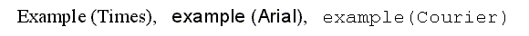

II. Glyph Outlines
This section describes the way scalable representations of glyph images, called outlines, are used by FreeType as well as client applications.
1. Pixels, points and device resolutions
Though it is a very common assumption when dealing with computer graphics programs, the physical dimensions of a given pixel (be it for screens or printers) are not squared. Often, the output device, be it a screen device or a printer, exhibits varying resolutions in both horizontal and vertical directions, and this must be taken care of when rendering text.
It is thus common to define a device's characteristics through two numbers expressed in dpi (dots per inch). For example, a printer with a resolution of 300×600 dpi has 300 pixels per inch in the horizontal direction, and 600 in the vertical one. The resolution of a typical computer monitor varies with its size (10″ and 25″ monitors don't have the same pixel sizes at 1024×768), and of course the graphics mode resolution.
As a consequence, the size of text is usually given in points, rather than device-specific pixels. Points are a physical unit, where 1 point equals 1/72th of an inch in digital typography. As an example, most books using the Latin script are printed with a body text size somewhere between 10 and 14 points.
It is thus possible to compute the size of text in pixels from the size in points with the following formula:
The resolution is expressed in dpi. Since horizontal and vertical resolutions may differ, a single point size usually defines a different text width and height in pixels.
Unlike what is often thought, the ‘size of text in pixels’ is not directly related to the real dimensions of characters when they are displayed or printed. The relationship between these two concepts is a bit more complex and depend on some design choices made by the font designer. This is described in more detail in the next sub-section (see the explanations on the EM square).
2. Vectorial representation
The source format of outlines is a collection of closed paths called contours. Each contour delimits an outer or inner region of the glyph, and can be made of either line segments or Bézier arcs.
The arcs are defined through control points, and can be either second-order (these are conic Béziers) or third-order (cubic Béziers) polynomials, depending on the font format. Note that conic Béziers are usually called quadratic Béziers in the literature. Hence, FreeType associates each point of the outline with flag to indicate its type (normal or control point). And scaling the points will scale the whole outline.
Each glyph's original outline points are located on a grid of indivisible units. The points are usually stored in a font file as 16-bit integer grid coordinates, with the grid's origin being at (0,0); they thus range from -32768 to 32767. (Even though point coordinates can be floats in other formats such as Type 1, we will restrict our analysis to integer values for simplicity).
The grid is always oriented like the traditional mathematical two-dimensional plane, i.e., the X axis goes from the left to the right, and the Y axis from bottom to top.
In creating the glyph outlines, a type designer uses an imaginary square called the EM square. Typically, the EM square can be thought of as a tablet on which the characters are drawn. The square's size, i.e., the number of grid units on its sides, is very important for two reasons:
-
It is the reference size used to scale the outlines to a given text dimension. For example, a size of 12pt at 300×300 dpi corresponds to 12*300/72 = 50 pixels. This is the size the EM square would appear on the output device if it was rendered directly. In other words, scaling from grid units to pixels uses the formula:
pixel_size = point_size * resolution / 72
pixel_coord = grid_coord * pixel_size / EM_size -
The greater the EM size is, the larger resolution the designer can use when digitizing outlines. For example, in the extreme example of an EM size of 4 units, there are only 25 point positions available within the EM square which is clearly not enough. Typical TrueType fonts use an EM size of 2048 units; Type 1 or CFF PostScript fonts traditionally use an EM size of 1000 grid units (but point coordinates can be expressed as floating values).
Note that glyphs can freely extend beyond the EM square if the font designer wants so. The EM square is thus just a convention in traditional typography.
Grid units are very often called font units or EM units.
As said before, pixel_size computed in the above formula does not directly relate to the size of characters on the screen. It simply is the size of the EM square if it was to be displayed. Each font designer is free to place its glyphs as it pleases him within the square. This explains why the letters of the following text have not the same height, even though they are displayed at the same point size with distinct fonts:

As one can see, the glyphs of the Courier family are smaller than those of Times New Roman, which themselves are slightly smaller than those of Arial, even though everything is displayed or printed at a size of 16 points. This only reflects design choices.
3. Hinting and Bitmap rendering
The outline as stored in a font file is called the ‘master’ outline, as its points coordinates are expressed in font units. Before it can be converted into a bitmap, it must be scaled to a given size and resolution. This is done with a very simple transformation, but always creates undesirable artifacts, in particular stems of different widths or heights in letters like ‘E’ or ‘H’.
As a consequence, proper glyph rendering needs the scaled points to be aligned along the target device pixel grid, through an operation called grid-fitting (often called hinting). One of its main purposes is to ensure that important widths and heights are respected throughout the whole font (for example, it is very often desirable that the ‘I’ and the ‘T’ have their central vertical line of the same pixel width), as well as to manage features like stems and overshoots, which can cause problems at small pixel sizes.
There are several ways to perform grid-fitting properly; most scalable formats associate some control data or programs with each glyph outline. Here is an overview:
-
explicit grid-fitting
The TrueType format defines a stack-based virtual machine, for which programs can be written with the help of more than 200 opcodes (most of them relating to geometrical operations). Each glyph is thus made of both an outline and a control program to perform the actual grid-fitting in the way defined by the font designer.
-
implicit grid-fitting (also called hinting)
The Type 1 and CFF formats take a much simpler approach: Each glyph is made of an outline as well as several pieces called hints which are used to describe some important features of the glyph, like the presence of stems, some width regularities, and the like. There aren't a lot of hint types, and it is up to the final renderer to interpret the hints in order to produce a fitted outline.
-
automatic grid-fitting
Some formats include no control information with each glyph outline, apart from font metrics like the advance width and height. It is then up to the renderer to ‘guess’ the more interesting features of the outline in order to perform some decent grid-fitting.
The following table summarizes the pros and cons of each scheme.
| grid-fitting scheme | advantages | disadvantages |
|---|---|---|
|
explicit |
Quality. Excellent results at small sizes are possible. This is very important for screen display. Consistency. All renderers produce the same glyph bitmaps (at least in theory). |
Speed. Interpreting bytecode can be slow if the glyph programs are complex. Size. Glyph programs can be long. Technical difficulty. It is extremely difficult to write good hinting programs. Very few tools available. |
|
implicit |
Size. Hints are usually much smaller than explicit glyph programs. Speed. Grid-fitting is usually a fast process. |
Quality. Often questionable at small sizes. Better with anti-aliasing though. Inconsistency. Results can vary between different renderers, or even distinct versions of the same engine. |
|
automatic |
Size. No need for control information, resulting in smaller font files. Speed. Depends on the grid-fitting algorithm. Usually faster than explicit grid-fitting. |
Quality. Often questionable at small sizes. Better with anti-aliasing though. Speed. Depends on the grid-fitting algorithm. Inconsistency. Results can vary between different renderers, or even distinct versions of the same engine. |
Last update: 07-Dec-2014